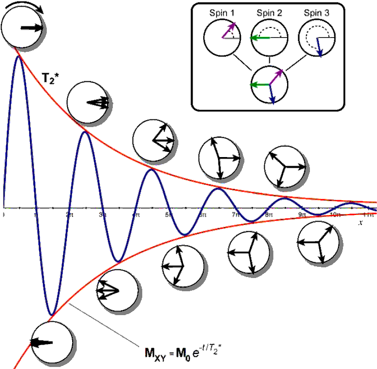

The FID
The precession of the magnetization gives rise to a current in the RF coil which, after various manipulations by the RF electronics in the spectrometer, results in a signal voltage which can be digitized and the result stored away in computer memory. The spectrometer is capable of detecting simultaneously both the x- and y-components of the magnetization, each giving rise to separate signals which we will denote Sx and Sy 
The signal amplitude (red curve) of the measured raw MR signal, the free induction decay (FID), decays exponentially with time constant T2*. The raw signal itself is oscillating at the resonance frequency (blue curve). The signal is lost due to dephasing as indicated by the the phase coherency plots (circles) with three representative, superimposed spins. When the sping are all in phase (left side) the maximum signal is obtained, i.e. the vector sum equals M0. When the sping are completely ou of phase (right side) the signal is completely lost, i.e. the sum of the spin vectors equals zero.
We used T2* because spin-spin relaxation decay (the FID), is affected by factors such as magneticfield inhomoheneity (i.e. microscopic regions within the sample with slighlty different magnitudes of B0), unresolved coupling, temperature gradients and other factors. T2* is an instrumental parameter and determines the line width of an NMR resonance observed in the spectrum. T2 on the other hans is the natural relaxation parameter independent of the field inhomoheneity, J coupling and other influences. T2 ≥ T2*.
In the basic pulse-acquire experiment, the evolution of the x- and y-components of the magnetization generated by a 90°(x) pulse can be written
My = -M0 cos Ωt Mx = M0 sin Ωt
If our pulse–acquire experiment had used a 90° pulse about y, rather than about x, the equilibrium magnetization would have been rotated onto the x-axis. As shown in Fig. 5.6, the evolution of the x- and y-components are given by
Mx = M0 cos Ωt My = M0 sin Ωt
It will suit us for our present purposes to use these forms of Mx and My ; later on, we will see that the choice we make is in any case arbitrary.
These signals are proportional to Mx and My , but their absolute size is not generally of any interest so we will simply write the constant of proportion as S0, the maximum value:
Sx = S0 cos Ωt Sy = S0 sin Ωt
Finally, we need to recognize that the magnetization, and hence the signal, will decay over time. We model this by assuming that the signal decays exponentially:
Sx = S0 cos Ωt exp(-t/T2) Sy = S0 sin Ωt exp(-t/T2)
where T2 is a time constant which characterizes the decay; the shorter T2, the more rapid the decay. As we will see, this decay is usually due to relaxation processes.
Rather than dealing with the x- and y-components separately, it is convenient to bring them together as a complex signal, with the x-component becoming the real part and the y-component the imaginary part. The complex signal is written S(t) to remind us that it is a function of time.
S(t) = Sx + i Sy = S0 cos Ω t exp(-t/T2) + S0 sin Ω t exp(-t/T2) =
= S0(cos Ωt exp(-t/T2) + i S0 sin Ωt) exp(-t/T2)
= S0exp(iΩt) exp(-t/T2) (1.5)
we have used the identity cos θ + i sinθ ≡ exp (iθ).
If there are several resonances present, then the complex time-domain signal is a sum of terms such
S(t) = S1sub>0exp(iΩ1 t) exp(-t/T2) + S20exp(iΩ2 t) exp(-t/T2)
where each resonance i has its own intensity S(i)0, frequency Ωi, and decay constant T(i)2.
The complex time-domain signal defined in Eq. 5.3 can be thought of as arising from a rotating vector of length S0 exp(–t/T2); the x- and y-components of the vector are given by Eq. 5.2 on the preceding page.